Day 1 - 29 June, 2025
Today's Progress:
- Finished the design for this simple log page, drawing inspiration from the neu-brutalist designs of the GumRoad and Codecademy sites. Aiming for a clean, readable layout.
- Completed a kata in Python and JS: Opposites Attract
- SheCodes: Practiced using elements of Bootstrap
- Boot.dev: Completed a few Python lessons
Thoughts:
Learnt about css variables, and managed to include some into this repo's css!
Day 2 - 30 June, 2025
Today's Progress:
Completed a few lessons about Python - learnt a bit about binary, converted strings of binary into integers, learnt a bit about exponents and scientific notation.
Thoughts:
Definitely need to practice these concepts more, maybe can find some codewars katas related to these areas.
Day 3 - 1 July, 2025
Today's Progress:
In this hot weather, having short Boot.dev lesson to work through make it easier to meet my goal of learning code for at least an hour a day. Worked through the "Comparisons" chapter in Python.
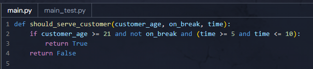Thoughts:
I wouldn't usually have written the code as above, but
I'm glad that I passed the tests for the exercise as it didn't come naturally to me to write it in one concise
line.
I was surprised that the solution provided had the if statements listed separately and with no if-else
statements.
Apparently, this is known as the "early exit" pattern and is recommended for readability and makes it easier
to maintain code.
Day 4 - 2 July, 2025
Today's Progress:
90 mins on Boot.dev working through the first Python course, I'm finding the exercises great practice & revision.
Day 5 - 3 July, 2025
Today's Progress:
Completed the Python course section on Lists

Thoughts:
In addition to practicing iterating over and slicing lists, I learnt about tuples and that they should only be used for a handful of items, otherwise a class or dictionary might be more suitable due to the information becoming harder to read the larger the tuples are.
Day 6 - 4 July, 2025
Today's Progress:
Completed the first Python course on Boot.dev!
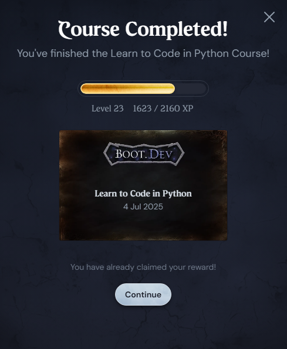Thoughts:
I'm finding that the most valuable learning moments often come after I've submitted my code, when
I
compare my approach to the suggested solutions. It's clear that my next step in development is to move from
just 'making it work' to 'making it elegant'.
The AI chat (Boots) has proven very helpful throughout these lessons as it has access to the lesson content,
your own solution and a suggested solution. Today, the AI chat tool told me about the simple | operator that
merges two sets in a single character!
My following chat with the AI tool suggested an approach that I'll test out going forwards: Focus on
identifying the core, uniform pattern of a task first, then handling the specifics or bugs afterwards. It
suggested that this "general-to-specific" approach will help me write less redundant code.
Day 7 - 5 July, 2025
Today's Progress:
Applied more Bootstrap techniques learn from the SheCodes course and completed the WSL2 setup for the upcoming Boot.dev course - I had nothing to be afraid of!
Thoughts:
Getting into Bootstrap, I'm realising how much more pratice I need in understanding documentation. There have
been some details I've wanted to customise, but haven't figured out from the documentation how to
achieve them in Bootstrap. I want to be able to refer solely to the documentation and not resort to asking AI
or searching elsewhere for help; if I find myself needing or wanting to use Bootstrap in the future, I will
need to dedicate time in experimenting with their classes, but for now I will just focus on getting
enough done for completing the SheCodes course.
For developers that are familiar with Bootstrap, I can see how it would be a great tool for quickly getting a
site up.
Day 8 - 6 July, 2025
Today's Progress:
Limited for time today, but spent an hour working through some SheCodes lessons. I wanted to try to complete a challenge in the last 30 minutes I had to spare:
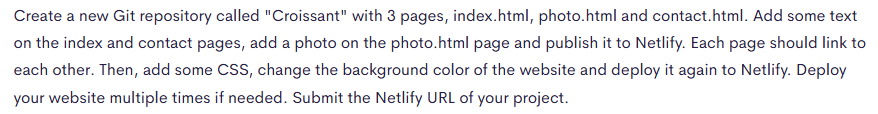Thoughts:
I didn't manage to complete the challenge in the 30 minutes, and need to return to it tomorrow.
- ☑️ Three basic separate html files created
- ☑️ AI-generated copy added
- ☑️ Bootstrap cdn links added
- ☑️ Deployed to Netlify
Day 9 - 7 July, 2025
Today's Progress:
In today's session I chose to continue with my 'terminal journey' on boot.dev. I learnt about the
10-character strings that indicate file permissions, and that you can chain options/commands (for lack of a
better
word) such as: ls -l -d private/
Day 10 - 8 July, 2025
Today's Progress:
Learnt a bit about what compiled and interpreted programs are, shell scripts and adding scripts to the PATH so that they can be easily accessed without remembering their location.
Thoughts:
So many new commands were covered today, I need need to find a pretty cheatsheet with examples of them in use.
Day 11 - 9 July, 2025
Today's Progress:
Completed the Linux course! It was a bit scary for me!
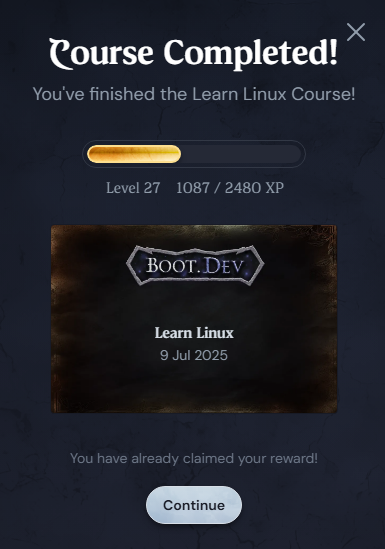Day 12 - 10 July, 2025
Today's Progress:
Completed the Git course!
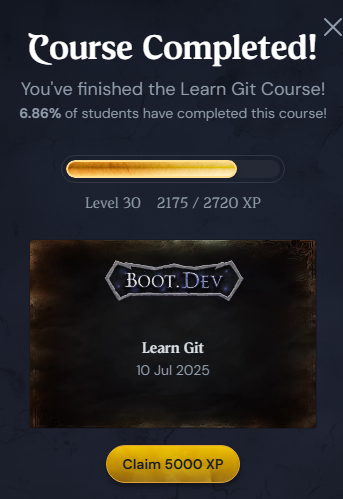Day 13 - 11 July, 2025
Today's Progress:
Finished the SheCodes Responsive Week 3 Challenge! Still getting the hang of Bootstrap, but I managed to mix it with CSS to make the provided template more mobile-friendly.
Link to Work:
Project linkDay 14 - 12 July, 2025
Today's Progress:
Made a start on a guided python project in Boot.dev, and opened up Figma to start wireframing a redesign for my portfolio.
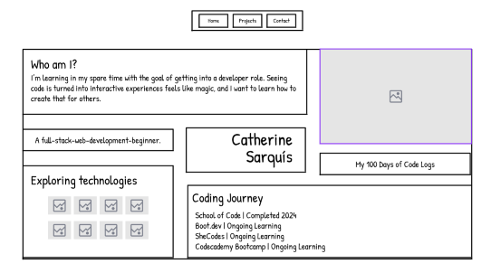Thoughts:
A LOT of time was spent browsing ideas, but I tend to prefer the "neu-brutalist" style. I personally have a strong dislike for scrolling, so the portfolio has to be non-scrollable... maybe I'll brainstorm ways of making this log non-scrollable too... or is it possible to auto-scroll? a vertical carousel?
Day 15 - 13 July, 2025
Today's Progress:
Continued a little on the boot.dev guided project - it's making a bookbot. Today I added a function to count the words in the one book. The function is made up of 3 lines, the lesson advises to use split(), but if it hadn't advised me to do that, I can't say for sure what route I would have taken to figure it out!
Day 16 - 14 July, 2025
Today's Progress:
I'm struggling with using sort() for the boot.dev guided project, but I'm determined to keep referring to documentation and oher examples I can find online in order to solve it and learn about it.
Day 17 - 15 July, 2025
Today's Progress:
I got unstuck on the sort method with the help of w3 schools, as reading through each of the exampls somehow made it click for me. This meant I could finish up the Readme file and complete this project!
Thoughts:
It was a reminder that sometimes I just need things explained in a different way. The python documentation for this still doesn't make sense to me! I reeeeaaally want to play around with nlp for analysing the texts and adding to this project, but I think it would be sensible to continue with the basics.
Link to Work:
https://github.com/catherine-sarquis/bookbotDay 18 - 16 July, 2025
Today's Progress:
Touched on another Boot.dev course - this one is about object oriented programming, which will be good to recall what I touched on in the SheCodes intro to it. Also completed the wireframe for updating my portfolio, deciding on two pages: home/brief into and a portfolio page.
Day 19 - 17 July, 2025
Today's Progress:
I enjoyed working through some exercises on Boot.dev practicing classes and methods.
Day 20 - 18 July, 2025
Today's Progress:
Fit in some boot.dev and logging it before work because I feel like I'm going to finish late. One thing that I questioned is when instance variables should be declared. I'll put what Boots advised me here as it will be useful for me to refer back to (this is based on the code captured in the below image)
Instance Variables vs. Local Parameters
Understanding the Differences
- Instance variables (like
self.target) persist after the method finishes and can be accessed by other methods. They belong to the object itself. - Parameters (like
target) only exist during the execution of that specific method call. They are temporary placeholders for values passed into a method.
When Should You Store Parameters as Instance Variables?
Only when you need to remember that information for later use in other methods.
Consider the example of casting a fireball:
- You don't need to remember who the target was after the fireball is cast.
- You don't need to remember the cost or damage values after the method completes.
- The fireball casting is a one-time action that happens and then it's done.
In this scenario, storing target, cost, or damage as instance
variables
would be unnecessary, as their values are only relevant for the duration of the fireball casting
method.
Day 21 - 19 July, 2025
Today's Progress:
Completed the last chapter of the object oriented programming boot.dev course. I definitely need to revise it after looking at some other resources since I feel I'm only getting the gist, and was struggling to complete the lessons without the help of the Boot ai.
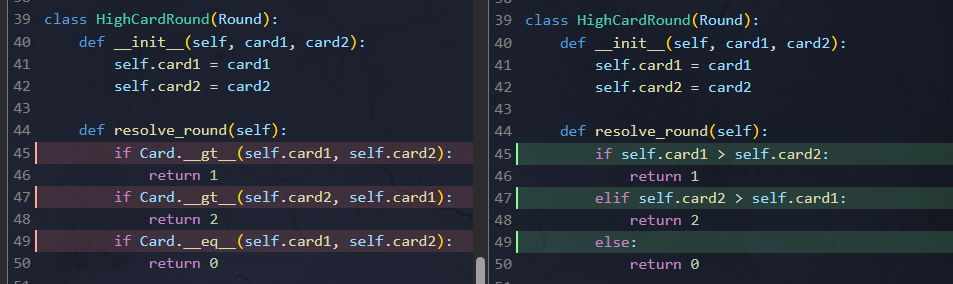Thoughts:
It didn't click for me until seeing the solution above that setting the dunder methods override Python's built-in implementation - now I can see the point of them!
Day 22 - 20 July, 2025
Today's Progress:
Today I'm working on completing my improved portfolio site to submit for tomorrow's SheCodes deadline. Last night, I added some JavaScript to add and remove a class name to the nav link that was active, but each time I clicked on the other link, the page refreshed and the class lost.
I got a completely different solution from AI, which worked, and I've learnt that I understand things better with a lot of practice, and so after copying the code from AI a couple of times; with a blank JS file, I asked AI to provide me with boot.dev-style steps to work through with some hints of what to search for on the mdn docs.
Link to Work:
Link to JS code on GithubThoughts:
I'm really happy with what I managed to code, with the exception of the 2nd and 3rd if statements that AI helped me with when asking about unexpected behaviour when clicking back to the home page.
So glad that I didn't have to use Bootstrap to achieve this!
Day 23 - 21 July, 2025
Today's Progress:
Finally got my portfolio's homepage layout pretty much how I intended it - maybe just some tweaks on the layout widths and height to make. I tried to do this layout last year, but couldn't get my head around how to achieve it past the mobile view!

Thoughts:
Going to celebrate this personal achievement!
Day 24 - 22 July, 2025
Today's Progress:
Drew up the styling of the portfolio page and have decided to add a dark/light theme toggle option.
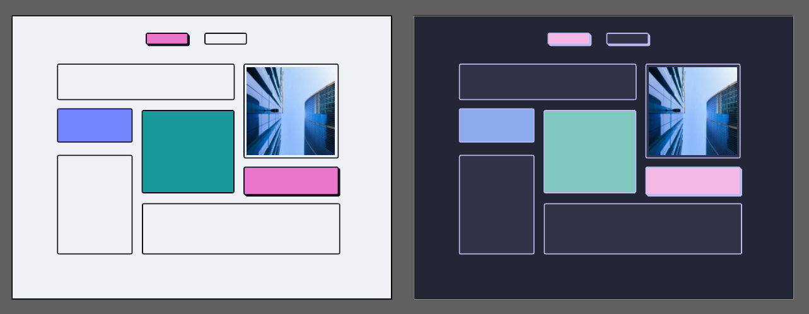Thoughts:
I do prefer the dark theme design - something is missing from the light version... but I really am not a designer!
Day 25 - 23 July, 2025
Today's Progress:
Put in the css for the dark theme of the portfolio homepage, and while I needed a lot of help from AI about toggling the theme, since I didn't understand the MDN documentation, I learnt about a lot 'features' and used the View Transition API, which makes the page transition so smooth in Chrome - unfortunately Firefox uses standard transition on the body only so far and it does not look as smooth as the API, but I'll try to improve on that tomorrow and apply it to the other elements to make it easier on the eyes.
Day 26 - 24 July, 2025
Today's Progress:
I used git-filter-repo [using pip install via a codespace] to remove the 'Storyline Portfolio/'
and 'assets/' folders from my entire
commit history. Here are the main commands I used in sequence:
1. Rewrite History:
git filter-repo --path 'Storyline Portfolio/' --path 'assets/' --invert-paths --force2. Finalise Deletion:
git gc --prune=now --aggressive3. Update GitHub:
git remote add origin <your-repo-url>
git push origin --force --all
After the process, I ran git count-objects -vH to check the size again. Voila! The repo had
shrunk to
a tiny 256 KiB. Then, I made a fresh clone of the repo and continued working as normal from the new clone.
Thoughts:
After a lesson on boot.dev, I realised my Git history was full of old, heavy portfolio files. I worried they
were
bloating my web hosting deployments, so I decided to clean up. My repo was about 15 MiB – big enough to
call in
the Men in Black? The funny thing is, I now realise this wouldn't have affected my hosting
limits. Website deployments only use files from your most recent commit, completely ignoring the
.git
history folder!
Day 27 - 25 July, 2025
Today's Progress:
Working on coding up the projects page of my portfolio now, there are less elements, so I hope to wrap this up tomorrow! The problem is that I keep noticing things that I don't like, or that I want to change - like today I changed some of the colours for the light mode because I felt it was missing something - not entirely convinced I've solved that problem though!
Day 28 - 26 July, 2025
Today's Progress:
Continued refining my online portfolio site today, submitting a partial version which means I can continue with the next section of the SheCodes Bootcamp for …wait for it… more portfolio work! I focussed on improvements to the nav buttons with smooth hover transitions, and am adding a new "Connect" page that will be very minimal. This connect page will be hidden from smaller screens, but some links can be added to the footer instead for these views.
Thoughts:
I'm discovering many elements on my portfolio that I want to refine!
Day 29 - 27 July, 2025
Today's Progress:
Spent the morning making tweaks to my portfolio, and since this is going to be an ongoing project, I've decided to submit it as I feel it's good enough. In the afternoon I picked up the next SheCodes course "Responsive Add-on", for which I completed some small exercises involving css grids, html tables, creating a css header hero and html embeds.
Link to Work:
Portfolio linkDay 30 - 28 July, 2025
Today's Progress:
With slightly blurry eyes and a slightly blurry mind after work today, I looked briefly at inheritance again in some Boot.dev lessons - looking at super keyword in a child class to access its parent; super() to call the parent's initial contructor; and super.method() for calling a parent's method and adding to its logic instead of completely replacing it.
Day 31 - 29 July, 2025
Today's Progress:
Worked through a couple of Boot.dev lessons: I found it interesting learning a bit about javascript
prototypes - basically, every JS object has a prototype, each leading up a chain to the root Object whose
prototype is null.
Objects store references to their prototypes, not actual copies of their properties.
When accessing a property, JS first checks the object itself, then walks up its prototype chain until it fincs
the property or reaches null.
Object.create() creates a new object with the specified prototype - establishing the prototype relationship
(not copying properties as mentioned)
Object.getPrototypeOf() returns the prototype of an object - providing a way to inspect the prototype
chain.
These appear to be the foundations of JavaScript's object system, I've added these points to my list of things
to go back to better understand how and why they're used.
Day 32 - 30 July, 2025
Today's Progress:
Practiced JS loops with Boot.dev, and made a start with the guided project for the SheCodes Responsive Add-on. While I find it relaxing copying a figma design, I don't find this module beneficial in terms of learning anything new, but as it's a one-page site, it might be a good project to try to provide translated pages for…
Day 33 - 31 July, 2025
Today's Progress:
Made some more progress on turning the provided Figma design into a webpage project and took a look online to find out how I can add multiple languages. I think I can find the user's preferred browser language and provide a dropdown list of languages also - it seems like an easy way of achieving this is by putting each language's index.html in its own directory. Apparently, if I find the right html code to use, it should automatically set any right-to-left language also, meaning that setting an Arabic page could be a good test of the CSS I've written!
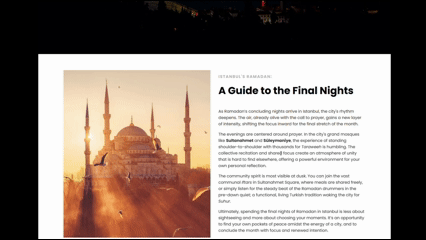Day 34 - 1 August, 2025
Today's Progress:
It's been a long day, before work I decided I want to have another crack at the Harvard CS50 course on Edx - I tried it out last year and a year or so prior, but was completely baffled by the first lecture. This time I've enjoyed it, so will try to add this to my learning resources also. I'm writing this super quickly before it hits midnight because I've almost found the spot in the window.location node that I need in order to change the page to another translated page that I set up… a lot of trial and error… gotta go before I lose my train of thought!
Day 35 - 2 August, 2025
Today's Progress:
Tidied up the SheCodes Responsive Add-on project by adjusting the colour palette, improved the functionality
of the dropdown for selecting a translated page by marking that page's respective option as selected and
disabled since that was the only solution I was able to implement. Although I used a font that I'm sure
supported various weights for Arabic, the strong tag wasn't applying a heavier
weight. I also needed to set any latin text as dir="ltr" on the Arabic page as well as making the
Arabic font-size larger and reducing the size of the latin text. I'm sure there are better and recommended
ways of working with other languages! Adding to my list of things to do: inspect some Arabic websites to see
their set up.

Day 36 - 3 August, 2025
Today's Progress:
I made a start today on the React course - we're starting out in codesandbox, and I made some jsx display! The folder structure looks confusing - and all the different tags in the js file throws me - maybe this is why I never understood it when we looked at it in the bootcamp! I think I'll need to take my time with this course to allow me to understand how this all works!
Day 37 - 4 August, 2025
Today's Progress:
Worked through some react exercises looking at the css, components and properties. These logs may be short like this for a while due to physical discomfort, but I will aim to continue learning for at least an hour a day.
Day 38 - 5 August, 2025
Today's Progress:
Practiced some more react - one task was to take the html and css from the weather app we'd previously created, and break it into components into a sandcodebox. I did that, however the solution walked through removing IDs, and adding dummy data as props. Not sure how far code should be broken down to form components. I also realised that my weather app wasn't responsive because I didn't want to use Bootstrap! So next I'll work on cleaning up the html and css for that project as well as making it responsive.
Day 39 - 6 August, 2025
Today's Progress:
In Boot.dev today: practised try/catch and finally blocks (that was new to me), and learning about sets and maps in javascript - not sure I understand how and why these are used, plus I need to practice them more! Also tried out spread and rest ... - that always looked scary to me, but in the examples that I understood, it seems pretty cool!
Day 40 - 7 August, 2025
Today's Progress:
Learnt a bit about state in React, and listened to the first lecture again of the Harvard CS course. It's not code-related, but more as a reminder for myself and my dream role as a developer: Move more and do core muscle and back strengthening exercises to avoid painful muscular injuries or disc bulging. Improve posture!
Day 41 - 8 August, 2025
Today's Progress:
After receiving generous advice from a very experienced developer, I've been brainstorming for a full-stack personal project to build. While I didn't code, I flicked through some YouTube videos to find out about MongoDB and Flask.
Day 42 - 9 August, 2025
Today's Progress:
While still brainstorming ideas for my project and thinking of how they might be approached, it was bugging me not understanding a basic state change in React, but it helped writing out the code for an imaginary coffee order form with a button that adds sugar:
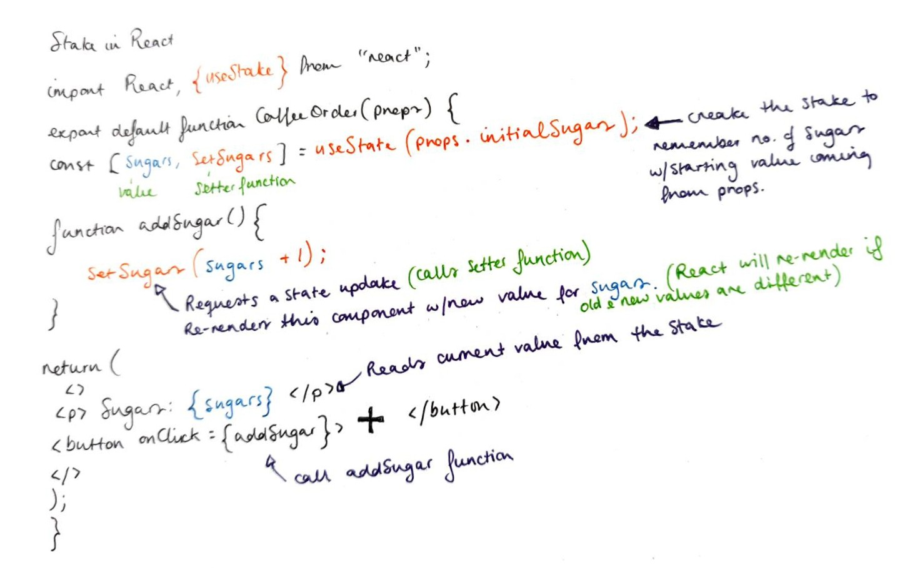A pause for progress - 13 August, 2025
After several days away from my daily coding challenge, I've had a chance to reflect on my goals and reset
my
intentions. While I wasn't actively logging my coding sessions, I did work through some online
exercises, but
nothing of note.
I realised I mostly needed time to reflect on and refresh my intentions, as well as on my habits and
consistency
in other areas of my life. This also happened to coincide with a reflective survey after passing my
probation
period at work… basically, lots of reflection happening all over.
I always thought it was intention that inspired action, but my 42-day coding streak suggested something new to
me:
intention just isn't enough on its own. The consistency wasn't just fueled by my dream of a tech role; it was
also because I
have a clear goal, a public log to track my progress, and a system that makes it easy to do every day. A key
point to note is that this challenge is been one of which my intentions, my passions, and a supportive system
all aligned perfectly.
When I look at other areas of my life, those key ingredients are often missing. My pause turned out to
actually be a chance (unbeknownst to me) to understand what made my coding challenge successful so I can
bring that
same
structure and clarity to everything else I want to achieve.
I'm gaining a renewed sense of purpose and clearing the path forward a bit. As a way to get back
into my
logs, here are some of the things I've been up to during this pause:
- I listened in on a technical resume review session and was so inspired by others' impressive CVs.
- I thought up some new activities that I'm excited to build for my project.
- Although I have zero experience with it, I think a NoSQL database could be a good fit for this projec idea, allowing me to easily record different information for each lemma.
Day 43 - 14 August, 2025
Today's Progress:
For an hour I just opened up VSCode and started to see how much of a flashcard concept I could put together -
ignoring appearance and with no plan.
It currently has a button that reveals a hidden tag in the html. Separately, I created a json file and fetched
it.
I'm curious to see what I can do with this tomorrow!
Day 44 - 15 August, 2025
Today's Progress:
Changed the button text to reveal/hide as applicable, and am now loading the words from the json file - was stuck for ages on accessing the properties, just getting undefined, until I realised that I had the object in a variable in a console.log!
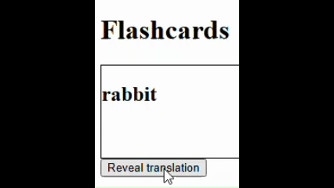Day 45 - 16 August, 2025
Today's Progress:
No progress today! In fact, I think the only solution is to go back to square one. I've revised the json file instead, adding an extra word and language details that I want to filter or perhaps test on.
Day 46 - 17 August, 2025
Today's Progress:
Back refreshed this morning, I started the JS from
scratch, and added a language selector to the html. I could retrive the user selection, but when I got to
fetching the json - all the error messages started appearing again. Obviously there was something I didn't
understand about this async function stuff. But what?
After searching online through maaaany examples, I realised I needed to await the response - not only
the fetch! So the fetch gets the promise, but then I need to await the response for the json to be parsed,
because JS can't read or understand the json.
So now, a language can be selected, and if one is selected, then it will display just the word for rabbit in
that language.
Day 47 - 21 August, 2025
Progress:
The last few days, I've been trying to get my head around putting a weather app I previously built in vanilla JS into react. I got stuck because I don't know enough! I've temporarily filled in the gaps with some searching and YouTube tutorials. I needed to understand useEffect and useState a bit better, and how it would be possible to keep the searchform as a component - but have it still affect the state in the parent App.jsx file. I've managed to work it out now based on an example I found - but there's no way I'd be able to repeat this without a lot of searching again... lots of repetition needed which would be a challenge for the flashcard app actually.
Day 48 - 27 August, 2025
Progress:
Other priorities have prevented me from coding and logging each day, but I'll continue as best as I can.
Started setting up the repo for a dictionary app with SheCodes in React with Vite and using Tailwind CSS.
Link to Work:
Portfolio linkDay 49 - 31 August, 2025
Progress:
Completed the SheCodes course - I'd only recommend the first several courses, but definitely not the React courses because the tutorials and projects are no longer relevent due to the course being several years old. I updated my portfolio to add two projects that I'm happy to showcase - the Vetero app in React, and the Dictionary app in React.